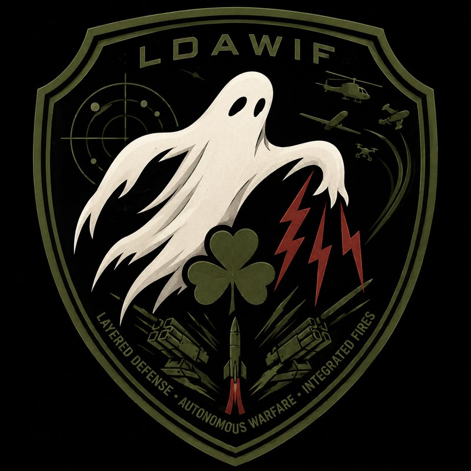

Layered Defense
Detect, deter, and defeat threats in depth, not at a single line.
- Counter-UAS detection and defeat
- Electronic warfare and spectrum operations
- Directed energy integration
- Air and missile defense C2
Layered Defense // Autonomous Warfare // Integrated Fires
We engineer, integrate, and validate the systems that sense threats, decide under pressure, and deliver effects across every domain. Then we prove they hold up under real conditions, before a warfighter ever depends on them.
Detect and track threats in depth across the electromagnetic and physical battlespace.
Fuse sensor data into a trusted picture the operator can act on.
Models that stay reliable, governed, and human-supervised from lab to field.THE SPINE
Synchronized effects delivered across domains and services.
What the division does
Each area stands on its own program record. What connects them is a refusal to field anything we have not validated under conditions that mirror the fight.
Detect, deter, and defeat threats in depth, not at a single line.
Human-supervised autonomy, built to doctrine and validated in test.
Synchronize effects across domains, from sensor to shooter.
The connective spine
A model that wins a demo and drifts in the field is a liability. We treat AI as a system that has to be maintained, monitored, and accountable, not a one-time deliverable. That discipline is what lets autonomy and fires be trusted at the edge.
// We deliver proof, not promises.
Who runs it
One division lead, and the leaders who own the missions, the mission areas, and the cross-cutting AI spine day to day.
Executive Vice President
Sets division strategy and leads enterprise growth.
Senior VP · Missions
Leads mission execution across the division.
// MISSIONSSenior VP · Solutions & Artificial Intelligence
Connects the mission areas with AI and ModelOps across the division.
// AI · MODELOPS · CROSS-CUTTINGVP · Autonomous Warfare
Leads autonomous and robotic systems and their assurance.
// MISSION AREA · MANEUVERVP · Integrated Fires
Leads the integrated fires mission area and effects across domains.
// MISSION AREA · STRIKEDirector · Unconventional Technologies
Drives unconventional and emerging technology for the mission areas.
// UNCONVENTIONAL TECHWork with the division
Program offices, primes, and technology partners: start with a conversation about where you need capability proven, not just promised.
Contact mailbox pending